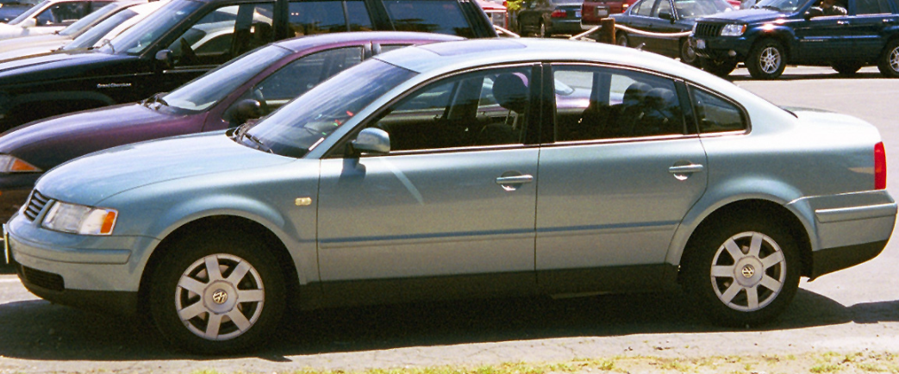

Jest wiele rodzajów samochodów. Najbardziej znane są te osobowe, wśród nich wyróżnia się jeszcze
wiele różnych grup, między innymi samochody typowo miejskie, ale też sportowe czy rodzinne.
Samochody miejskie przeznaczone są do poruszania się do mieście, są idealne na zakupy czy przejażdżkę.
Ich zalety doceniają kobiety: są niewielkie, zwrotne i bardzo wygodnie się je prowadzi. Z kolei samochody
sportowe są przeznaczone do szybkiej jazdy, rekreacyjnej, raczej nie nadają się dla rodzin z dziećmi. Są to
idealne auta dla koneserów, miłośników motoryzacji. Rodzinne auta to np. typu kombi, pomieszczą nawet duża rodzinę,
są bezpieczne i komfortowe.
Przyjrzyjmy się bliżej klasyfikacji samochodów osobowych ze względu na nadwozie.
SPIS
Ten rodzaj nadwozia jest zaliczany do tak zwanej grupy podstawowej.
Cechą charakterystyczną jest dość pojemna przestrzeń bagażowa, która pozwala pasażerom
na podróżowanie w dalsze trasy, a sama pokrywa bagażnika najczęściej znajduje się poniżej linii
tylnej szyby i jest bez niej otwierana. Auta typu sedan występują w wersji 2- lub 4-drzwiowej
i są kojarzone z autami eleganckimi i luksusowymi. Przykładem takiego właśnie pojazdu może być Volkswagen Passat.
SPIS
Kolejny samochód, który można zaklasyfikować jako nadwozie podstawowe.
Ważnym elementem dla tego pojazdu są drzwi bagażnika otwierane razem z szybą,
które są uznawane za drzwi samochodu i właśnie dlatego wyróżniamy wersje 3- i 5-drzwiowe.
Hatchbacki najczęściej występują w przypadku aut średnich oraz małych i mają ograniczoną powierzchnię bagażową,
ale są także wyjątki. Jednym z nich jest Opel Signum lub Renault Laguna III.
SPIS
Jest to nadwozie konstrukcyjnie bardzo zbliżone do opisywanego powyżej hatchbacka,
a główna różnica polega na bardziej pochylonej szybie oraz uwypuklonym bagażnikiem
i zwiększoną pojemnością bagażnika, co może prowadzić do ich mylenia właśnie z autami
typu sedan. Za przykład możemy tutaj podać Skodę Superb II generacji.
SPIS
Ten rodzaj nadwozia możemy zdefiniować jako sedan, którego część przeznaczona na bagaż została wydłużona.
Co więcej, wysokość w dachu w obszarze przeznaczonym na bagaż jest bardzo zbliżona do wysokości,
którą możemy odnotować w części przeznaczonej dla pasażerów i właśnie to odróżnia auta typu kombi
od pojazdów typu hatchback, a klapa bagażnika również w tym przypadku jest traktowana jak drzwi.
Ten rodzaj nadwozia z pewnością zostanie wybrany przez osoby, które cenią sobie dużą funkcjonalność i
znaczną ładowność. Warto również wspomnieć o zastosowaniu tutaj popularnych relingów dachowych,
które pozwalają na zamontowanie dodatkowego bagażnika na przykład na rowery lub narty.
SPIS
Typ nadwozia jednobryłowego, który jest również określany mianem pojazdu wielozadaniowego.
Składa się na kilka typów budowy, w zależności od zastosowania i przeznaczenia,
a wyróżniamy zabudowę osobową do transportu osób, skrzyniową lub furgon w celu
przewożenia określonego towaru.
SPIS
Inaczej nazywany także Multi Purpose Vehicle jest produkowany na podstawie nadwozia
samochodu osobowego i dostępny w 4 różnych klasach, a ilość siedzeń sięga nawet do 8 w
3 rzędach. Przykładem pojazdu typu minivan może być między innymi Citroen C4 Picasso,
Opel Zafira II lub Renault Scenic III.
SPIS
Auto przeznaczone jest dla wszystkich osób, które podczas jazdy uwielbiają czuć
wiatr we włosach i promienie słońca na skórze. Nadwozie ma formę otwartą, a dach może
mieć w tym wypadku formę materiałową chowaną w bagażniku naszego pojazdu lub stalową,
która jest zostawiana w garażu. Sztywny dach to znacznie mniejszy poziom hałasu podczas
podróży, ale z drugiej strony również większa masa pojazdu, a najczęściej również i mniejszy
bagażnik. Możemy wyróżnić nadwozia 2- i 4-drzwiowe.
Tutaj możemy sklasyfikować także specjalną podkategorię kabrioletów, a mianowicie roadstery,
które są pojazdami typowo sportowymi, a charakteryzują się skróconym tyłem i długim przodem.
SPIS
Również w tym przypadku mamy do czynienia z autami o sportowym pazurze,
a są one przeznaczone i projektowane w największym stopniu z myślą o kierującym
i osobie zajmującej miejsce obok niego. Zastosowana stylizacja jest opływowa, linia
dachu opada, a znaczenie ma w tym wypadku efekt wizualny oraz imponujące osiągi, co w
efekcie ma rozbudzać pożądanie potencjalnych nabywców, a także zazdrosne spojrzenia osób
mijających tę właśnie konstrukcję. Typowym przykładem jest Audi TT.
SPIS
Ten rodzaj konstrukcji jest bardzo często mylony z autami typowo terenowymi.
W rzeczywistości jest to bardzo funkcjonalne połączenie właśnie pojazdów terenowych
oraz rodzinnych, w efekcie czego uzyskujemy dużą pojemność, komfort i luks podróżowania
oraz zwiększony prześwit. Tutaj wyodrębnić możemy także tak zwany crossover, który
stanowi kompromis pomiędzy samochodem osobowym a SUV-em, a przykładem jest Mitsubishi Outlander.
SPIS
Ten model nadwozia jest w większości przypadków łatwy do zidentyfikowania i nie budzi
żadnych wątpliwości, a dzieje się to za sprawą charakterystycznej skrzyni ładunkowej
umieszczonej za kabiną pasażerską. Sama kabina może mieć wiele kombinacji w zależności
od wymagań i preferencji właściciela, ale największą popularnością cieszy się tak zwana
podwójna kabina, która może pomieścić nawet do 6 pasażerów. Auta tego typu są rozchwytywane w Ameryce.
Przedstawione powyżej informacje odnoszą się do charakterystycznych cech najbardziej
popularnych pojazdów, które możemy obserwować na naszych drogach. Obok samochodów
osobowych wyróżnia się również samochody dostawcze, które spotykamy przed sklepem czy
hurtownią - dostarczają towary do różnych punków, są pakowne i funkcjonalne. Wyróżnia
się również tak zwane samochody specjalne, na przykład eleganckie limuzyny, które można
wypożyczyć do ślubu, ale również samochody straży pożarnej czy pogotowia ratunkowego.
i są kojarzone z autami eleganckimi i luksusowymi. Przykładem takiego właśnie pojazdu może być Volkswagen Passat.